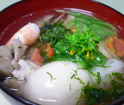

お雑煮
- 調理時間：20 分
- （一人当たり）
- カロリー：217kcal
- たんぱく質：12.3g
- 脂質：7.2g
- 塩分：1.5g

＜４人分＞
- 丸もち
- ４つ
- ダイコン
- ３ｃｍ
- ニンジン
- ２ｃｍ
- ゆでタケノコ
- ４０ｇ
- 里芋
- １００ｇ
- マイタケ
- １／３パック
- 鶏肉
- １／２枚
- エビ
- ４尾
- 菜の花
- １／４束
- 水菜
- １／４束
- 青のり
- 少々
- だし汁
- ８００ｍｌ
- 酒
- 大さじ２
- 塩
- 小さじ１
- 薄口しょうゆ
- 少々

- 鶏肉は食べやすい大きさに切り、酒、塩（分量外）を振る。エビは殻をむく。鶏肉とエビはだし汁少々で下煮する。
- ダイコン、ニンジンは花型にぬき、里芋は皮をむいて一口大、マイタケは手でさき、タケノコは食べやすい大きさに切る。
- 菜の花と水菜は３～４ｃｍ幅に切る。
- 鍋にだし汁、酒、塩、薄口しょうゆを加えて火にかけ、煮立ったら②を加えて煮る。火が通ったら①を加える。
- 弱火にして丸餅を加え、餅がやわらかくなったら、③を加えてサッと煮る。
- お椀に盛りつけ、青のりを添える。
お雑煮
餅は日本人にとって特別な日に食べる「ハレ」の食べものです。新年を迎えるにあたり、歳神様にお供えをして元旦にそのお供えを下げたものをいただくのが「お雑煮」で、各地に伝わる雑煮は、餅の形、汁の仕立て方、具の種類、食べ方など地域によっても家庭によっても様々。旧年の無事を感謝し、新年の家内安全を祈りながらいただきましょう。
「雑煮」の語源は「煮雑（にまぜ）」という言葉を逆にしたものでいろいろな具材を煮合わせたことからきています。ですから今回は、食材豊富なお雑煮のレシピをご紹介しました。澄まし汁仕立てであっさり仕上げたお雑煮で年末年始の疲れた胃腸を休めましょう。